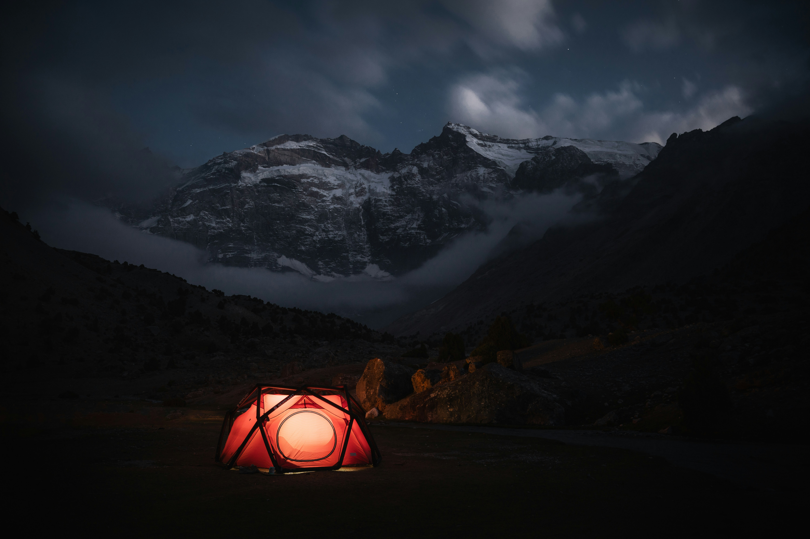

TAfter topping out, construction on this 679-meter-tall build became the world’s second tallest skyscraper, earning it the tenth spot on our list of largest construction projects. The building symbolizes Malaysian independence both in the way it was designed architecturally and the name itself. Merdeka means “independence,” which is culturally significant to the people of Malaysia as the country separated from British rule and became an independent nation in 1957.
The Jansen Potash Project led by BHP is set to be the largest potash producing mine in the world. This mine will provide a rich source of potassium to the world’s crops and soil which will result in improved food production globally. As the population of the world climbs, the demand on the agriculture sector globally to supply enough food continues to mount. This state-of-the-art facility located in Saskatchewan, Canada could be the interim answer to assisting our farmers with the task of feeding billions of people.